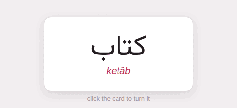

Shortcodes
A shortcode is Hugo’s way of putting something into a page that Markdown has no syntax for: {{< name arguments >}}, and for one that wraps something, a closing {{< /name >}}. Arguments are named (src="x.png") or given in order ("x.png"); a value with spaces goes in double quotes, and a long list of them may run over several lines. The {{% name %}} form works the same way.
The guide has Hugo’s built-in shortcodes — the ones a page that is read without a server can honour. A shortcode it does not know is said at compile time, with its page and line, and shows on the page as a red box, so that it cannot go unnoticed.
1. figure#
A picture with a caption, a title, a link, a size:

The front, before it is turned.
It takes Hugo’s arguments: src, alt, caption (Markdown), title, link with target and rel, attr and attrlink (a credit), width, height, class and loading.
2. details#
A block that opens when its summary is clicked; Markdown inside:
It is said at compile time, and drawn as a **red box** where it stood.What happens to an unknown shortcode?
It is said at compile time, and drawn as a red box where it stood.
open=true shows it open; class, name and title are passed on.
3. highlight#
A code block, written as Hugo’s older sites wrote one; the options are the fence’s:
for word in words: print(word)for word in words: print(word)4. ref and relref#
The address of another page, from its file: in a link, or on its own. Both give the same relative address here. A ref to a page that is not there stops the compile with an error.
[Code blocks]({{< ref "code-blocks.md" >}}) and[its nested fences]({{< relref "code-blocks.md#nested-fences" >}}).Code blocks and its nested fences.
5. param#
A value from the page’s front matter:
This page is called “”.This page is called “Shortcodes”.
6. youtube, vimeo#
{{< youtube id >}} (or id=, with start= and end= in seconds), {{< vimeo id >}}: the video, embedded the privacy-minded way. See Pictures and media.
7. qr#
A QR code, drawn by the compiler — dark on light whatever the theme, so that a phone can read it off the screen:
level= sets how much of it may be damaged and still read (low, medium, quartile, high), scale= its size, alt= what a screen reader says.
8. x, instagram, gist#
Hugo fetches these from their services when it builds; the guide is built without the network and read without it, so it draws a link to the post instead: {{< x user="gohugoio" id="1234567890" >}}, {{< instagram "CxOWiQNP2MO" >}}, {{< gist user id >}}.
9. comment#
Text for whoever edits the page, never shown:
The screenshots are from version 3. 10. Writing a shortcode that is not run#
Hugo’s escape works: {{</* … */>}} in the text of a page shows the shortcode instead of running it — {{< figure src="x.png" >}} — which is how this page writes them outside its code. Inside code, nothing is ever run, so the plain form is enough there.